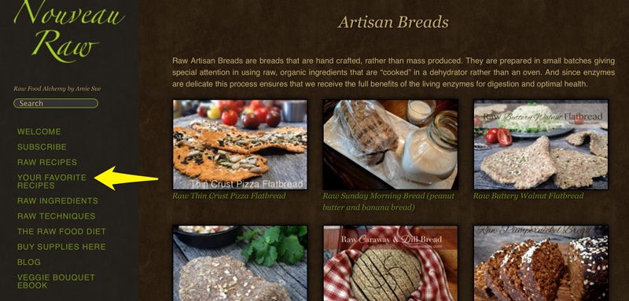
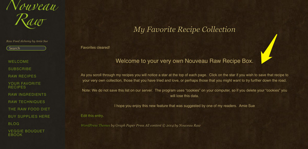
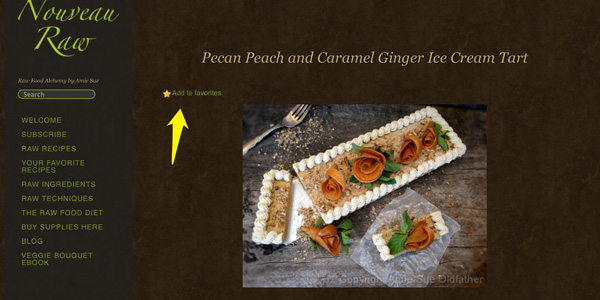
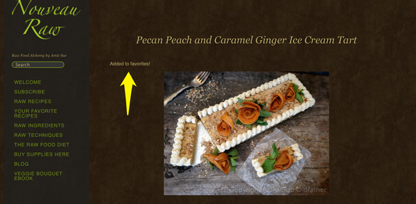
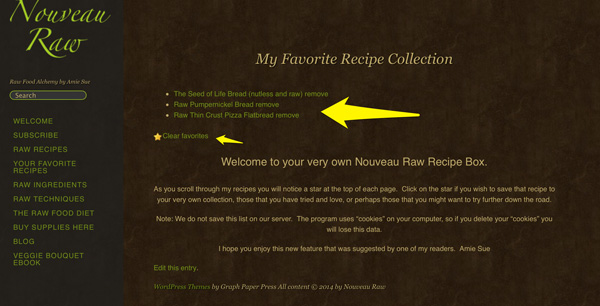

New Added Feature ~ “Your Favorite Recipes”
I wanted to let you know that we have added a new feature to Nouveau Raw. It is called “Your Favorite Recipe”. This came as a special request by one of our readers . And we aim to please. :) This feature can be found on the left-side menu bar on your screen. See the green arrow in the photo below.

____________________________________________________________________
Once you click on the menu it will take you to the “My Favorite Recipe Collection”.
Please read the instructions that once you open up the page on your computer.
____________________________________________________________________

____________________________________________________________________
In the photo below, you will see the yellow arrow pointing at a yellow star
with the words, “Add to Favorites”. When you click on those words, it
will save that recipe to your own collection of favorite recipes.
You will find this star at the top of each recipe.
____________________________________________________________________

____________________________________________________________________
Once you have clicked on it, it will now read “Added to Favorites!”
____________________________________________________________________

____________________________________________________________________
Now once you have started a collection, you can click on the“ Your Favorite Recipes”
on the left-side menu bar and see what recipes you have selected. See the large yellow arrow below.
If you want to visit that recipe, you just click on the name of the recipe that is in the green ink.
You will also the word remove, this is to remove any recipe one at a time from your favorites.
See the tiny yellow arrow? It reads “Clear favorites” be careful, once you click that, it will erase all
the recipes in your collection and then you would have to re-add them one at a time .
Please note; Your favorite list isn’t stored on my site, it is stored in the cache folder on your browser,
so if you clear you cache folder on your computer, you will lose your favorites list. I can’t
replace it for you.
____________________________________________________________________

____________________________________________________________________
I hope that you enjoy this feature. If you have any questions or comments,
please leave note below and I will do my best to help. ;)
Have a wonderful day! Amie Sue
© AmieSue.com